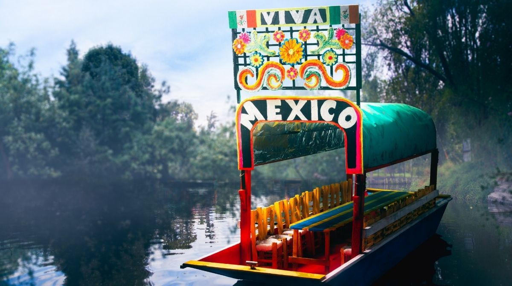
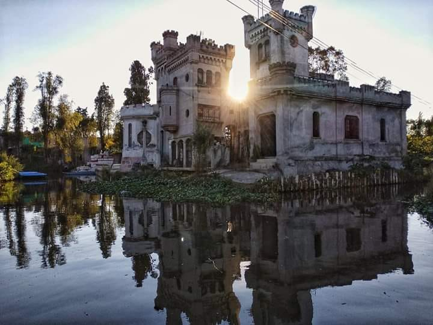

Algunos de los lugares mas sonados de esta zona son los siguientes:
Los famosos canales de Xochimilco, los últimos restos del extenso sistema de transporte que crearon los aztecas, se encuentran en el sur de Ciudad de México, junto a un esforzado barrio de clase obrera. Las coloridas góndolas llevan a los visitantes a dar paseos junto a los botes de vendedores de comida, artesanos y mariachis. La atmósfera es festiva, especialmente los fines de semana. Los turistas también pueden visitar la escalofriante Isla de las Muñecas, supuestamente embrujada.

Xochimilco, ubicada al sureste de la Ciudad de México, tiene una historia rica y compleja, marcada por su importancia prehispánica, su papel en la conquista española, y su evolución como centro turístico y agrícola. Desde sus inicios como un importante centro agrícola con el sistema de chinampas, hasta su reconocimiento como Patrimonio de la Humanidad por la UNESCO, Xochimilco ha sido testigo de la evolución de la cultura mexicana.
